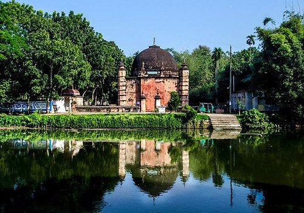

Atiya Jame Moshjid
আতিয়া মসজিদ বাংলাদেশের টাঙ্গাইল জেলার দেলদুয়ার উপজেলায় অবস্থিত একটি প্রাচীন ঐতিহাসিক মসজিদ যা বাংলাদেশের অন্যতম প্রত্নতাত্ত্বিক নিদর্শন। এই মসজিদটি ষোড়শ শতাব্দীতে নির্মিত হয়েছে এবং এখানে নিয়মিত জামাতে নামাজ আদায় করা হয়। বর্তমানে বাংলাদেশ সরকারের পুরাতত্ত্ব বিভাগ এ স্থাপনার তত্ত্বাবধান করছে। টাঙ্গাইল অঞ্চলে প্রাপ্ত মূল শিলালিপিগুলোর মধ্যে আতিয়া জামে মসজিদ এলাকায় প্রাপ্ত একটি আরবি এবং একটি ফার্সি শিলালিপি রয়েছে, তবে এগুলোতে মসজিদের নির্মাণকাল সম্পর্কিত তথ্যের ক্ষেত্রে কিছুটা অসংগতি পরিলক্ষিত হয়। বাংলাদেশের জাতীয় জাদুঘরে রক্ষিত শিলালিপিটিতে নির্মাণকাল ১০১৯ হিজরি (১৬১০-১১ খ্রি.) দেয়া হলেও কেন্দ্রীয় প্রবেশ পথের উপর স্থাপিত অপর শিলালিপিতে এর নির্মাণকাল ১০১৮ হিজরি (১৬০৮-৯ খ্রি.)[৩] উল্লেখ করা হয়েছে।লাল ইট দ্বারা নির্মিত এই মসজিদটি আকারে বেশ ছোট, মাত্র ১৮.২৯ মিটার (৫৯ ফুট) x ১২.১৯ মিটার (৪০ ফুট) এবং দেয়ালের পুরুত্ব ২.২৩ মিটার (সাড়ে ৭ ফুট)। এর চারকোণে ৪টি অষ্টকোণাকৃতীর মিনার রয়েছে, যার উপরের অংশটি ছোট গম্বুজের আকৃতি ধারণ করেছে। সুলতানি ও মুঘল—এই দুই আমলেরই স্থাপত্যরীতির সুস্পষ্ট নিদর্শন রয়েছে এই মসজিদের নির্মাণ শৈলীতে।